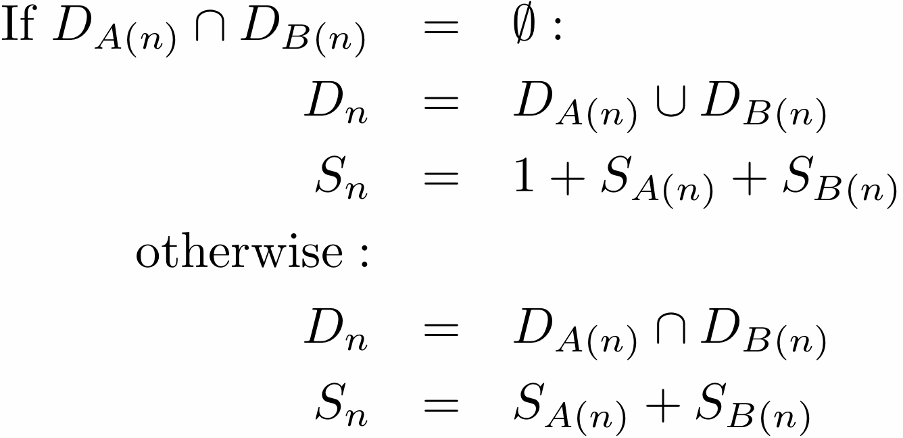

Conducting likelihood-based phylogenetic inference requires calculating the probability that a particular set of characters would arise under the assumption that the evolutionary process is described by a combination of tree topology, branch lengths, and numerical parameters for a model of character evolution. In a landmark paper1 , Felsenstein introduced a dynamic programming algorithm, the pruning algorithm, which allows one to perform this set of probability calculations efficiently for a discrete-state character. Felsenstein’s algorithm sweeps down the tree once, making its computational complexity linear with respect to N, the number of tips in the tree. At each internal node that is the parent of another internal node, it must consider the transition probabilities between all possible of pairs of unseen states. Thus the algorithm scales with the square of the number of character states, K. The number of possible ancestral character state combinations that could result in any pattern is on the order of K(N-2), but the pruning algorithm enables the probability of the pattern to be calculated in a number of steps that scales on the order (N-2)K2.
In some contexts, we would like to be able to calculate the probability that any member of a class of patterns would arise on a tree. For example, Waddell et al.2 introduced a method for assessing the adequacy of a substitution model in phylogenetics. They noted that tests of model adequacy introduced by Reeves3 and Goldman45 often lack power, particularly for data sets with a large number of sequences. These tests use a likelihood-ratio test statistic to compare the probability of the data under a phylogenetic model to the probability of the data under an "unconstrained", multinomial model. The multinomial model has a free parameter for every possible data pattern. The likelihood under this unconstrained model is an upper bound on the likelihood for any independent-sites model4 because the unconstrained model can perfectly match the relative frequency of every observed pattern. The lack of power inherent in these tests arises from the enormous number of free parameters in the multinomial model. The number of possible patterns grows exponentially with the number of tips in the tree. Because each of the N leaves can assume any of the K states, there are KN possible patterns. The multinomial model makes no constraint on the expected frequencies (other than that they sum to 1), so there are KN-1 free parameters in the model. For the test to detect that the phylogenetic model is inadequate, the likelihood improvement associated with the unconstrained model must be large enough to overcome the substantial penalty for overparameterization that comes with this very large number of free parameters. Waddell et al.2 provide a more powerful test using a likelihood ratio created binning the data patterns into groups of similar characters. The bins that they suggest using group characters based on the observed number of steps (according to the parsimony criterion) and the observed set of states. A well-constructed marginal test, such as this test, can detect deficiencies in the model caused by underestimating certain aspects of the process of molecular evolution. For example, if a particular amino acid is required at a site in a protein-coding sequence, then the third base position of the codon may be constrained to be a purine. Over long periods of evolution, sites will exhibit a large number of substititions, but only two states (A or G). An iid (independent, identically-distributed) model of nucleotide change will consistently underpredict the prevalence of such patterns. By binning all patterns that display only A and G and that imply 9 steps according to parsimony (for example), Waddell et al2‘s marginal test reveals the repeated underestimation of an iid model of this class of data patterns without introducing a large number of free parameters in the multinomial model that provides the reference likelihood. This results in a more powerful test. To calculate the probability of any member of a class of patterns arising on a tree, Waddell et al2simulated a large number of characters and counted the proportion of them which displayed one of the patterns in the class. This simulation-based approximation clearly does not scale to large trees. The algorithm that we introduce here will enable the relatively efficient calculation of the probability of a class of data patterns; this will make the marginal tests of Waddell et al.2 available for a larger range of phylogenetic problems.
The algorithm presented below is a dynamic programming approach to calculating the probability of a data pattern belonging to a class of patterns. Specifically the classes of patterns are all patterns which share the same set of observed states, the number of steps according to parsimony, and downpass state set according to the Fitch6 algorithm. The probabilities used in the marginal test of Waddell et al.2 can be obtained from these probabilities by summing over all possible downpass state sets. When referring to "the Fitch algorithm" below, we refer to "preliminary phase" (commonly referred to as the "downpass") of identifying possible ancestral states in the terminology of Fitch6 . This part of the parsimony reconstruction algorithm was originally published in Fitch7 . It allows one to calculate the parsimony score of an unordered character in a single pass down the tree. At each internal node, the algorithm composes a set of states. This state set, referred to as the downpass state set, is not the set of possible states in the most parsimonious reconstruction. It is only the preliminary phase of creating the most parsimonious reconstruction. Nevertheless, it is useful because when we encounter an internal node in Fitch’s downpass the only pieces of information that we need are the downpass state sets of the nodes children and the number of parsimony steps accrued in the subtrees rooted at each child. Specifically, the downpass starts by initializing the leaves of the tree such that a leaf’s downpass state set is identical to the set of states observed for that taxon and the parsimony score accrued is 0. Let Dn is the downpass state set of a node and Sn denote the number of parsimony steps contributed by the subtree rooted at node n. A(n) denotes the first child of node n and B(n) denotes the second child. The algorithms described are restricted to fully resolved trees. Because branch rotation is not significant in phylogenetics, the designation of which child is the "first" and which is the "second" is arbitrary. The downpass algorithm of Fitch is performed as a postorder traversal, and at an internal node n:
The dynamic algorithm described below relies on the fact that we can pre-calculate all of the possible downpass state sets, and all of the combinations of child nodes’ downpass state sets that could result in these state sets.